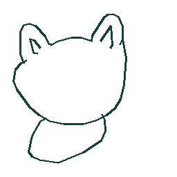
DESIGN-001 · bear
train · 원본 스케치 5526808248188928
SYNTHETIC DATA LAB
공식 사업·상품 맥락을 참고한 연구 데이터 v1입니다. 초기 50 SKU 실행 데모와 별도의 100 SKU 개발 자료입니다. 아래 이미지는 오로라월드의 실제 제품 사진·재단 패턴이 아닙니다.
곰·고양이·토끼 공개 스케치를 회전·크기 변형했습니다. Sketch-RNN 모델을 학습한 결과는 아닙니다.

train · 원본 스케치 5526808248188928
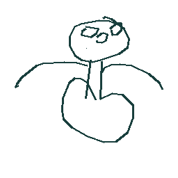
train · 원본 스케치 4962441630842880
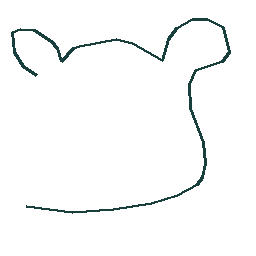
train · 원본 스케치 5521991777910784
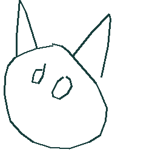
train · 원본 스케치 5771614111137792
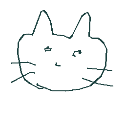
train · 원본 스케치 5433139847495680
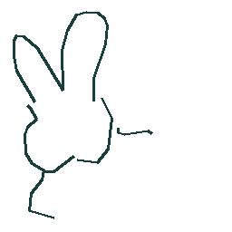
test · 원본 스케치 5057926131613696
100개 디자인 각각의 12개 조각, A3 배치·원단·수량·BOM·표준명·별칭·정답을 연결했습니다. 원본 이미지에는 정답 텍스트를 넣지 않았습니다.
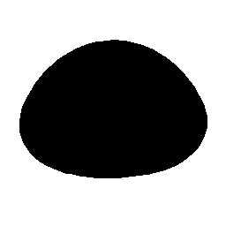
PIECE-00001 · 51.468 × 37.72 mm
좌우·앞뒤는 형상만으로 확정 불가 · 검수 필요
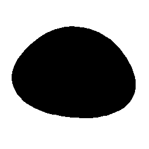
PIECE-00002 · 51.468 × 37.72 mm
좌우·앞뒤는 형상만으로 확정 불가 · 검수 필요
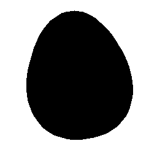
PIECE-00003 · 53.958 × 65.6 mm
좌우·앞뒤는 형상만으로 확정 불가 · 검수 필요
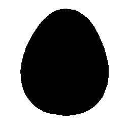
PIECE-00004 · 53.958 × 65.6 mm
좌우·앞뒤는 형상만으로 확정 불가 · 검수 필요
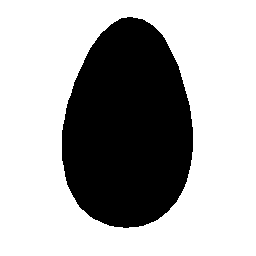
PIECE-00005 · 18.263 × 29.52 mm
좌우·앞뒤는 형상만으로 확정 불가 · 검수 필요
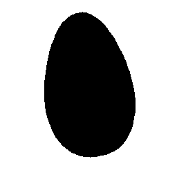
PIECE-00006 · 18.263 × 29.52 mm
좌우·앞뒤는 형상만으로 확정 불가 · 검수 필요
PIECE-00007 · 17.433 × 39.36 mm
좌우·앞뒤는 형상만으로 확정 불가 · 검수 필요
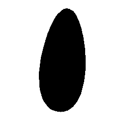
PIECE-00008 · 17.433 × 39.36 mm
좌우·앞뒤는 형상만으로 확정 불가 · 검수 필요
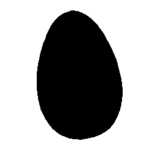
PIECE-00009 · 23.244 × 35.26 mm
좌우·앞뒤는 형상만으로 확정 불가 · 검수 필요
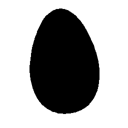
PIECE-00010 · 23.244 × 35.26 mm
좌우·앞뒤는 형상만으로 확정 불가 · 검수 필요
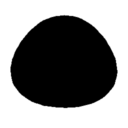
PIECE-00011 · 25.402 × 22.042 mm
합성 템플릿 정답
PIECE-00012 · 33.205 × 39.36 mm
합성 템플릿 정답
누락·미개시·반품·간헐·전기간 0·계절·추세·프로모션·품절 사례를 포함합니다. 재고 수지와 발주 입고, 키·분할·파일 해시를 확인했고 실제 기준선도 실행했습니다. 수요 원본은 관측 출하량이며 품절 시 잠재 수요와 다릅니다.
패턴의 학습·검증·평가는 디자인 가족군을 나누고, 원본 스케치도 분할 사이에 공유하지 않습니다. 좌우·앞뒤가 같은 형상인 예제는 검수를 요구합니다. 이 데이터로 확인한 성능은 기업 실데이터 성능을 보장하지 않습니다.
사업 맥락: 오로라월드 · Palm Pals 공식몰. 공식 제품 이미지 원본은 배포물에 포함하지 않았습니다.
수요 변동 참고: M4 공식 학습 데이터. M4 평가 데이터는 생성에 사용하지 않았습니다.
아트워크: Google, Inc. / Quick, Draw! contributors, CC BY 4.0. 원본 데이터에서 900개 표본을 내려받아 회전·크기 변형했습니다. 전체 데이터셋을 다운로드한 것은 아닙니다.